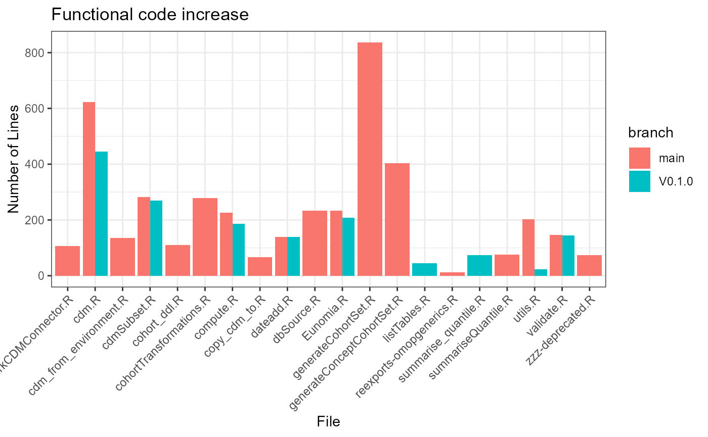

Comparing branches
Maarten van Kessel
2023-05-08
ComparingBranches.Rmdgit package
tempDir <- tempdir()
pathToRepo <- file.path(tempDir, "IncidencePrevalence")
git2r::clone(
url = "https://github.com/darwin-eu/IncidencePrevalence.git",
local_path = pathToRepo)## cloning into 'C:\Users\MVANKE~1\AppData\Local\Temp\RtmpOKLr0N/IncidencePrevalence'...
## Receiving objects: 1% (7/637), 63 kb
## Receiving objects: 11% (71/637), 63 kb
## Receiving objects: 21% (134/637), 127 kb
## Receiving objects: 31% (198/637), 239 kb
## Receiving objects: 41% (262/637), 520 kb
## Receiving objects: 51% (325/637), 2537 kb
## Receiving objects: 61% (389/637), 4610 kb
## Receiving objects: 71% (453/637), 4834 kb
## Receiving objects: 81% (516/637), 4890 kb
## Receiving objects: 91% (580/637), 4946 kb
## Receiving objects: 100% (637/637), 5824 kb, done.## Local: main C:/Users/mvankessel/AppData/Local/Temp/RtmpOKLr0N/IncidencePrevalence
## Remote: main @ origin (https://github.com/darwin-eu/IncidencePrevalence.git)
## Head: [0df2185] 2023-05-08: v0.3Objects
Repository
repo <- PaRe::Repository$new(pathToRepo)Git management
repo$gitCheckout("main")## Switched to: main## Re-initializing
repo$gitPull(credentials = git2r::cred_token())## Pulling latest## Re-initializing
dev <- repo$clone()
dev$gitCheckout("4fb265d7632b3499b82b6bdabde32ebea7bdc1d6")## Switched to: 4fb265d7632b3499b82b6bdabde32ebea7bdc1d6## Re-initializingRepository properties
repo$getPath()## [1] "C:\\Users\\mvankessel\\AppData\\Local\\Temp\\RtmpOKLr0N\\IncidencePrevalence"
repo$getName()## [1] "IncidencePrevalence"
repo$getDescription()## Package: IncidencePrevalence
## Title: Estimate Incidence and Prevalence using the OMOP Common
## Data Model
## Version: 0.3.0
## Authors@R (parsed):
## * Edward Burn <edward.burn@ndorms.ox.ac.uk> [aut, cre] (<https://orcid.org/0000-0002-9286-1128>)
## * Berta Raventos <braventos@idiapjgol.info> [aut] (<https://orcid.org/0000-0002-4668-2970>)
## * Marti Catala <marti.catalasabate@ndorms.ox.ac.uk> [aut] (<https://orcid.org/0000-0003-3308-9905>)
## * Mike Du <mike.du@ndorms.ox.ac.uk> [ctb] (<https://orcid.org/0000-0002-9517-8834>)
## * Yuchen Guo <yuchen.guo@ndorms.ox.ac.uk> [ctb] (<https://orcid.org/0000-0002-0847-4855>)
## * Adam Black <black@ohdsi.org> [ctb] (<https://orcid.org/0000-0001-5576-8701>)
## * Ger Inberg <g.inberg@erasmusmc.nl> [ctb] (<https://orcid.org/0000-0001-8993-8748>)
## * Kim Lopez <kim.lopez@spc.ox.ac.uk> [ctb] (<https://orcid.org/0000-0002-8462-8668>)
## Description: Calculate incidence and prevalence using data mapped
## to the Observational Medical Outcomes Partnership (OMOP) common data
## model. Incidence and prevalence can be estimated for the total
## population in a database or for a stratification cohort.
## License: Apache License (>= 2)
## URL: https://darwin-eu.github.io/IncidencePrevalence/
## Depends:
## R (>= 4.0)
## Imports:
## CDMConnector (>= 0.6.0),
## checkmate (>= 2.0.0),
## cli (>= 3.0.0),
## DBI (>= 1.0.0),
## dbplyr (>= 2.0.0),
## dplyr (>= 1.1.0),
## ggplot2 (>= 3.4.0),
## glue (>= 1.5.0),
## lubridate (>= 1.0.0),
## magrittr (>= 2.0.0),
## purrr (>= 0.3.5),
## rlang (>= 1.0.0),
## scales (>= 1.1.0),
## stringr (>= 1.5.0),
## tidyr (>= 1.2.0),
## tidyselect (>= 1.2.0),
## zip (>= 2.2.0)
## Suggests:
## duckdb,
## epitools,
## here,
## Hmisc,
## knitr,
## odbc,
## rmarkdown,
## RPostgres,
## spelling,
## testthat (>= 0.3.1),
## tibble,
## tictoc
## VignetteBuilder:
## knitr
## Config/testthat/edition: 3
## Encoding: UTF-8
## Language: en-US
## Roxygen: list(markdown = TRUE)
## RoxygenNote: 7.2.3File
files <- repo$getFiles()
files## $R
## $R[[1]]
## <File> <Code> <R6>
## Name: benchmarkIncidencePrevalence.R
## # Lines: 304
## $R[[2]]
## <File> <Code> <R6>
## Name: bindEstimates.R
## # Lines: 135
## $R[[3]]
## <File> <Code> <R6>
## Name: estimateIncidence.R
## # Lines: 487
## $R[[4]]
## <File> <Code> <R6>
## Name: estimatePrevalence.R
## # Lines: 525
## $R[[5]]
## <File> <Code> <R6>
## Name: exportIncidencePrevalenceResults.R
## # Lines: 98
## $R[[6]]
## <File> <Code> <R6>
## Name: generateDenominatorCohortSet.R
## # Lines: 465
## $R[[7]]
## <File> <Code> <R6>
## Name: getDenominatorCohorts.R
## # Lines: 462
## $R[[8]]
## <File> <Code> <R6>
## Name: getIncidence.R
## # Lines: 352
## $R[[9]]
## <File> <Code> <R6>
## Name: getPrevalence.R
## # Lines: 332
## $R[[10]]
## <File> <Code> <R6>
## Name: getStudyDays.R
## # Lines: 139
## $R[[11]]
## <File> <Code> <R6>
## Name: incidencePrevalence-package.R
## # Lines: 8
## $R[[12]]
## <File> <Code> <R6>
## Name: inputValidation.R
## # Lines: 367
## $R[[13]]
## <File> <Code> <R6>
## Name: mockIncidencePrevalenceRef.R
## # Lines: 487
## $R[[14]]
## <File> <Code> <R6>
## Name: obscureCounts.R
## # Lines: 68
## $R[[15]]
## <File> <Code> <R6>
## Name: plotting.R
## # Lines: 231
## $R[[16]]
## <File> <Code> <R6>
## Name: recordAttrition.R
## # Lines: 62
## $R[[17]]
## <File> <Code> <R6>
## Name: utils-pipe.R
## # Lines: 14
## $R[[18]]
## <File> <Code> <R6>
## Name: utils.R
## # Lines: 212
##
## $cpp
## list()
##
## $o
## list()
##
## $h
## list()
##
## $java
## list()
##
## $sql
## list()
file <- files$R[[2]]
file## <File> <Code> <R6>
## Name: bindEstimates.R
## # Lines: 135File properties
file$getName()## [1] "bindEstimates.R"
file$getNLines()## [1] 135
file$getType()## [1] "R"
head(file$getLines())## [1] "# Copyright 2023 DARWIN EU®"
## [2] "#"
## [3] "# This file is part of IncidencePrevalence"
## [4] "#"
## [5] "# Licensed under the Apache License, Version 2.0 (the \"License\");"
## [6] "# you may not use this file except in compliance with the License."
tail(file$getLines())## [1] "#' @noRd"
## [2] "checkNotEmpty <- function(result, label) {"
## [3] " if (length(result) == 0) {"
## [4] " cli::cli_abort(paste0(\"No \", label, \" provided\"))"
## [5] " }"
## [6] "}"
file$getFunctionTable()## name lineStart lineEnd nArgs cycloComp
## 1 bindIncidenceEstimates 42 56 1 1
## 2 bindPrevalenceEstimates 84 98 1 1
## 3 bindEstimates 101 120 3 2
## 4 checkClass 123 128 2 1
## 5 checkNotEmpty 131 135 2 2Function
functions <- file$getFunctions()
functions## [[1]]
## <Function> <Code> <R6>
## Name: bindIncidenceEstimates
## # Lines: 15
## [[2]]
## <Function> <Code> <R6>
## Name: bindPrevalenceEstimates
## # Lines: 15
## [[3]]
## <Function> <Code> <R6>
## Name: bindEstimates
## # Lines: 20
## [[4]]
## <Function> <Code> <R6>
## Name: checkClass
## # Lines: 6
## [[5]]
## <Function> <Code> <R6>
## Name: checkNotEmpty
## # Lines: 5
fun <- functions[[1]]
fun## <Function> <Code> <R6>
## Name: bindIncidenceEstimates
## # Lines: 15Function properties
fun$getName()## [1] "bindIncidenceEstimates"
fun$getNLines()## [1] 15
fun$getFunction()## name lineStart lineEnd nArgs cycloComp
## 1 bindIncidenceEstimates 42 56 1 1
head(fun$getLines())## [1] "bindIncidenceEstimates <- function(...) {"
## [2] " result <- list(...)"
## [3] " label <- \"IncidenceResult\""
## [4] " checkNotEmpty(result, label)"
## [5] " names <- deparse(substitute(list(...))) %>%"
## [6] " {"
tail(fun$getLines())## [1] " gsub(\"\\\\)\", \"\", .data)"
## [2] " } %>%"
## [3] " stringr::str_split(\", \") %>%"
## [4] " unlist()"
## [5] " return(bindEstimates(result, names, label))"
## [6] "}"ComPaRing main to develop
dplyr::bind_rows(
PaRe::countPackageLines(repo) %>% mutate(branch = "main"),
PaRe::countPackageLines(dev) %>% mutate(branch = "V0.1.0")
)## # A tibble: 2 × 7
## R cpp o h java sql branch
## <int> <int> <int> <int> <int> <int> <chr>
## 1 4748 0 0 0 0 0 main
## 2 4414 0 0 0 0 24 V0.1.0
PaRe::pkgDiagram(repo)
PaRe::pkgDiagram(dev)
mainFunUse <- PaRe::getFunctionUse(repo) %>%
mutate(branch = "main")
devFunUse <- PaRe::getFunctionUse(dev) %>%
mutate(branch = "V0.1.0")
pkgUse <- dplyr::bind_rows(
mainFunUse,
devFunUse) %>%
group_by(pkg, branch) %>%
tally()
library(ggplot2)
ggplot(data = pkgUse, mapping = aes(x = pkg, y = n, fill = branch)) +
geom_bar(stat = "identity", position = "dodge") +
theme_bw() +
theme(axis.text.x = element_text(angle = 45, vjust = 1, hjust = 1))
mainFuns <- PaRe::getDefinedFunctions(repo)
devFuns <- PaRe::getDefinedFunctions(dev)
defFuns <- bind_rows(
mainFuns %>% mutate(branch = "main"),
devFuns %>% mutate(branch = "V0.1.0")
)
ggplot(data = defFuns, mapping = aes(y = cycloComp, x = name, fill = branch)) +
geom_bar(stat = "identity", position = "dodge") +
theme_bw() +
theme(axis.text.x = element_text(angle = 45, vjust = 1, hjust = 1)) +
labs(title = "Cyclomatic Complexity per Function", x = "Function", y = "Cyclomatic Complexity")
ggplot(data = defFuns, mapping = aes(y = lineEnd - lineStart + 1, x = name, fill = branch)) +
geom_bar(stat = "identity", position = "dodge") +
theme_bw() +
theme(axis.text.x = element_text(angle = 45, vjust = 1, hjust = 1)) +
labs(title = "Number of Lines per Function", y = "Number of Lines", x = "Function")
effectiveCode <- defFuns %>%
group_by(fileName, branch) %>%
summarise(n = sum(lineEnd - lineStart + 1)) %>%
ungroup()## `summarise()` has grouped output by 'fileName'. You can override using the
## `.groups` argument.
ggplot(data = effectiveCode, mapping = aes(y = n, x = fileName, fill = branch)) +
geom_bar(stat = "identity", position = "dodge") +
theme_bw() +
theme(axis.text.x = element_text(angle = 45, vjust = 1, hjust = 1)) +
labs(title = "Functional code increase", y = "Number of Lines", x = "File")
mainGraph <- PaRe::getGraphData(repo)##
[32m✔
[39m Updated metadata database: 4.96 MB in 12 files.
[32m✔
[39m Updated metadata database: 4.96 MB in 12 files.
##
##
[36mℹ
[39m Updating metadata database
[36mℹ
[39m Updating metadata database
[32m✔
[39m Updating metadata database ... done
[32m✔
[39m Updating metadata database ... done
devGraph <- PaRe::getGraphData(dev)
library(igraph)##
## Attaching package: 'igraph'
##
## The following objects are masked from 'package:dplyr':
##
## as_data_frame, groups, union
##
## The following objects are masked from 'package:stats':
##
## decompose, spectrum
##
## The following object is masked from 'package:base':
##
## union
data.frame(
branch = c("main", "V0.1.0"),
countVertices = c(length(igraph::V(mainGraph)), length(igraph::V(devGraph))),
countEdges = c(length(igraph::E(mainGraph)), length(igraph::E(devGraph))),
meanDegree = c(round(mean(igraph::degree(mainGraph)), 2), round(mean(igraph::degree(devGraph)), 2)),
meanDistance = c(round(mean(igraph::distances(mainGraph)), 2), round(mean(igraph::distances(devGraph)), 2))
)## branch countVertices countEdges meanDegree meanDistance
## 1 main 270 1215 9 2.85
## 2 V0.1.0 270 1215 9 2.85## filename line_number column_number type
## 1 benchmarkIncidencePrevalence.R 49 81 style
## 2 benchmarkIncidencePrevalence.R 50 81 style
## 3 benchmarkIncidencePrevalence.R 53 1 style
## 4 benchmarkIncidencePrevalence.R 83 50 style
## 5 benchmarkIncidencePrevalence.R 113 10 warning
## 6 benchmarkIncidencePrevalence.R 131 5 style
## message
## 1 Lines should not be more than 80 characters.
## 2 Lines should not be more than 80 characters.
## 3 Functions should have cyclomatic complexity of less than 15, this has 19.
## 4 Commas should always have a space after.
## 5 no visible global function definition for 'generateDenominatorCohortSet'
## 6 Place a space before left parenthesis, except in a function call.
## line
## 1 #' earliestObservationStartDate = as.Date("2010-01-01") ,
## 2 #' latestObservationStartDate = as.Date("2018-01-01"))
## 3 benchmarkIncidencePrevalence <- function(cdm,
## 4 lengthpOcheck <- length(prevOutcomes) %in% c(1,nOutcomes)
## 5 cdm <- generateDenominatorCohortSet(
## 6 if(length(prevOutcomes) == 1 && nOutcomes != 1) {
## linter
## 1 line_length_linter
## 2 line_length_linter
## 3 cyclocomp_linter
## 4 commas_linter
## 5 object_usage_linter
## 6 spaces_left_parentheses_linter
bind_rows(
PaRe::lintScore(repo, messages) %>% mutate(branch = "main"),
PaRe::lintScore(dev, messages) %>% mutate(branch = "v0.1.0")
)## # A tibble: 4 × 3
## type pct branch
## <chr> <dbl> <chr>
## 1 style 7.56 main
## 2 warning 1.45 main
## 3 style 8.13 v0.1.0
## 4 warning 1.56 v0.1.0